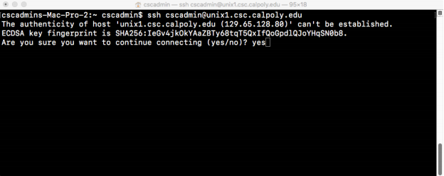
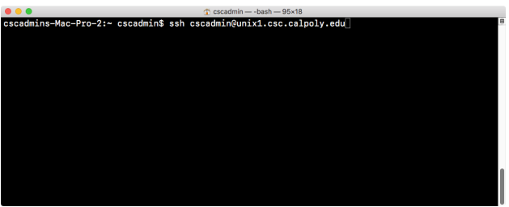

Introduction
As a computing student, you have access to the CSC Unix servers that come with 5GB of storage for your classes and projects. These servers run the Linux distribution CentOS 7. They can be used for:
- Storing and editing code
- Compiling and running executables
- Turning in homework assignments (via the tool handin)
- Hosting static web pages on the csc.calpoly.edu domain
You will have access to servers named unix1, unix2, …, unix5. These servers and the lab workstations are connected by a shared file system, which means any file you create / upload on one system can be accessed on another as long as it is saved in your home directory.
Unlike a traditional desktop environment with a graphical user interface, you will navigate the system using the command line provided by a program, called the shell. The default shell is called Bash (Bourne again shell), which has its own "language" for interfacing with the computer. You will want to familiarize yourself with some of the basic Bash file and directory commands. (see table below)
Mac OS / Linux Guide
Each server has a name used to identify and log into it This is what unix1’s address looks like, which can be replicated for the other Unix servers:
[uname]@unix1.csc.calpoly.edu
The uname is your unique Cal Poly username, which can be found at the beginning of your Cal Poly email address. Example: schan11@calpoly.edu, your uname is schan11
- Open the terminal application on your computer (Mac: command + space and search “terminal”, Linux: Window Key, search for “terminal”)
- Type in the command ssh followed by the unix server address and click enter:
- If this is the first time you’ve logged into this server, a prompt will ask if you want to trust this server. It’s unlikely someone is trying to impersonate the server, so if you believe you’re connected to the “real” unix server, type yes and press enter. 
- Finally, type in your Cal Poly password. This will be the same password you use to log into the Cal Poly portal
- You are now on one of the Unix servers! To logout, simply type logout in the terminal.
ssh [uname]@unix1.csc.calpoly.edu
Windows 10 Guide
There are several options to accessing the Unix servers through Windows:
- Installing OpenSSH
- This allows you to SSH into the servers using the Windows Command Prompt
- Once OpenSSH is installed, follow the Mac OS / Linux Guide for login, using the Windows Command Prompt instead of a terminal
- Installing a Linux Subsystem
- This allows you to run Unix commands locally on your Windows machine
- Once the subsystem is installed, open the subsystem application and follow the Mac OS / Linux Guide for login
- Installing an SSH Client
- Third-party programs such as Putty and MobaXTerm save your login credentials
Other Notes
- Remember that some of your files can be made public if you do not include the proper permissions on them
- Learn about the chmod command and file permissions to ensure your files are not publicly visible
- You can use the www/ directory to host your own webpages!
- make sure you give read and execute permission to all users of the www/ directory using chmod
- create an index.html file, which will be the first page shown on your URL
- view your page at users.csc.calpoly/~[username]
- If you would like to transfer your own files to the server, use the command scp